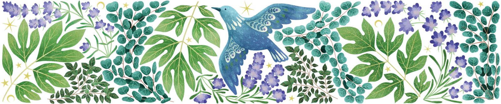

Profile

日常に息づく
やまなか韶子
大阪在住の
雑誌、
大学で
その後、
草花や
お仕事の
showkoyamanaka@gmail.com
Hi, I'm Showko Yamanaka.
I'm an illustrator and designer based in Osaka, Japan.
I create illustrations for magazines, books, brochures, websites, and more.
After studying graphic design at university, I worked as a designer at a printing company. Since leaving that position, I've been working as a DTP operator and designer, while also building my career as an illustrator.
I enjoy illustrating small, everyday moments and scenes from nature—especially plants and flowers—with a warm and gentle touch.
If you have a project or collaboration in mind, please feel free to contact me. I would be happy to hear from you!
Email: showkoyamanaka@gmail.com